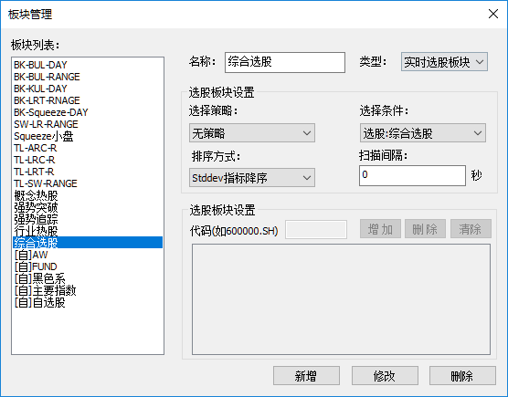
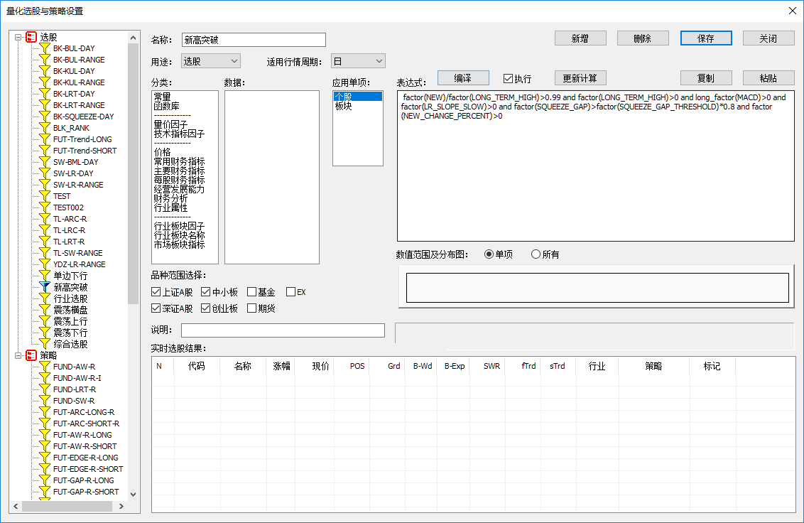
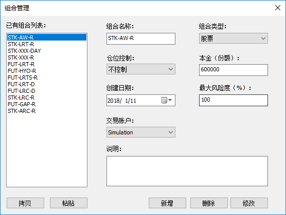
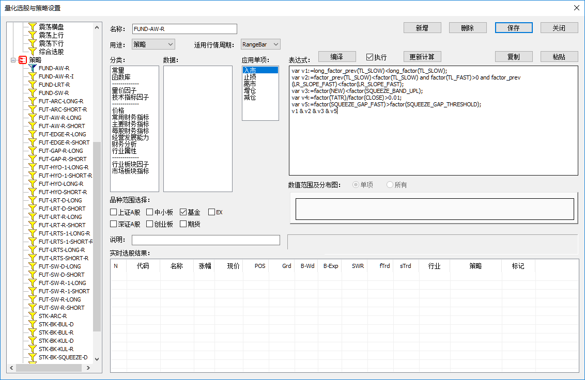
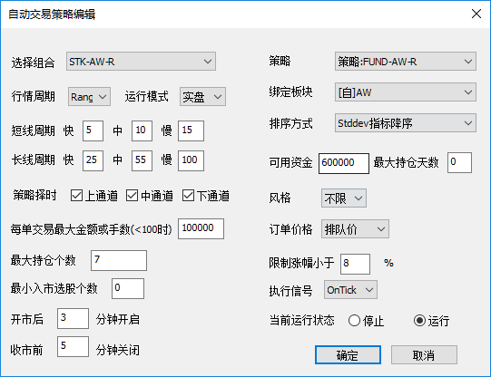

股票策略模拟交易¶
股票策略的第一步是要设置生成一个板块，然后设计交易策略，与相应的板块绑定，以绑定的板块为交易目标对象， 设置策略的运行参数
板块¶
点击菜单“数据”->“板块管理”，弹出对话框，如下图：
实时选股板块¶
实时选股板块里的股票是根据最新行情，定时刷新的。
点击菜单“数据”->“选股&策略编辑管理”，弹出对话框，如下图：
点开左侧选股图标，展开树目录，会看到已有的选股策略，可以新增选股策略。选股在“用途”设置项必须设置成“选股”。
下面是一些选股策略的JSON格式数据：
- 新高突破
{ "barsize" : 7, "expr0" : " factor(NEW)/factor(LONG_TERM_HIGH)>0.99 and factor(LONG_TERM_HIGH)>0 and long_factor(MACD)>0 and factor(LR_SLOPE_SLOW)>0 and factor(SQUEEZE_GAP)>factor(SQUEEZE_GAP_THRESHOLD)*0.8 and factor(NEW_CHANGE_PERCENT)>0", "expr1" : "block_rank(day_avg)<6", "expr2" : "", "expr3" : "", "expr4" : "", "group" : 15, "id" : "06160802210129000", "name" : "新高突破", "remark" : "", "used" : "选股" }
- 震荡上行
{ "barsize" : 6, "expr0" : "factor(STDDEV_SLOW)<factor(STDDEV_THRESHOLD) and factor(BAND_GRADIENT)>0.5", "expr1" : "", "expr2" : "", "expr3" : "", "expr4" : "", "group" : 80, "id" : "00161012160814000", "name" : "震荡上行", "remark" : "", "used" : "选股" }
- 震荡横盘
{ "barsize" : 6, "expr0" : "(factor(SHORT_TERM_HIGH)-factor(SHORT_TERM_LOW))/factor(CLOSE)<0.1 and factor(SHORT_TERM_HIGH)>0", "expr1" : "", "expr2" : "", "expr3" : "", "expr4" : "", "group" : 95, "id" : "00161012161745002", "name" : "震荡横盘", "remark" : "", "used" : "选股" }设置好选股策略后，在【类型】选项中，选择“实时选股板块”。在【选择条件】选项中，选择设置好的选股策略， 如“选股：新高突破”。还有设置【排序方式】和【扫描间隔】。
股票组合设置¶
点击菜单“数据”->“组合管理”，弹出对话框，如下图：

- 在【组合类型】选项中，选择“股票”。
- 在【本金（份额）】选项中，设置起始本金。
- 在【交易账户】选项中，必须选择“Simulation”。
股票策略设置¶
点击菜单“数据”->“选股&策略编辑管理”，弹出对话框，如下图：

点开左侧策略图标，展开树目录，会看到已有的交易策略，可以新增交易策略。选股在“用途”设置项必须设置成“策略”。
下面是一些股票策略的JSON格式数据：
- FUND-AW-R
{ "barsize" : 6, "expr0" : "var v1:=long_factor_prev(TL_SLOW)<long_factor(TL_SLOW);\r\nvar v2:=factor_prev(TL_SLOW)<factor(TL_SLOW) and factor(TL_FAST)>0 and factor_prev(LR_SLOPE_FAST)<factor(LR_SLOPE_FAST);\r\nvar v3:=factor(NEW)<factor(SQUEEZE_BAND_UPL);\r\nvar v4:=factor(TATR)/factor(CLOSE)>0.01;\r\nvar v5:=factor(SQUEEZE_GAP_FAST)>factor(SQUEEZE_GAP_THRESHOLD);\r\nv1 & v2 & v3 & v5", "expr1" : "", "expr2" : "long_factor_prev(TL_SLOW)>long_factor(TL_SLOW) and factor(TL_FAST)<0", "expr3" : "var v1:=long_factor_prev(TL_SLOW)<long_factor(TL_SLOW);\r\nvar v2:=factor_prev(TL_SLOW)<factor(TL_SLOW) and factor(TL_FAST)>0 and factor_prev(LR_SLOPE_FAST)<factor(LR_SLOPE_FAST);\r\nvar v3:=factor(NEW)<factor(SQUEEZE_BAND_UPL);\r\nvar v4:=factor(TATR)/factor(CLOSE)<0.02;\r\nvar v5:=factor(SQUEEZE_GAP_FAST)>factor(SQUEEZE_GAP_THRESHOLD);\r\nv1 & v2 & v3 & v5", "expr4" : "var v1:=COST_X_ATR>0.0;\r\nvar v2:=factor_prev(TL_SLOW)<factor(TL_SLOW) and factor(LR_SLOPE_FAST)<0;\r\nvar v3:=factor_prev(TL_SLOW)>factor(TL_SLOW) and factor(LR_SLOPE_FAST)<factor(LR_SLOPE_SLOW_THRESHOLD);\r\nv1 & (v2 | v3)", "group" : 32, "id" : "00180111140025000", "name" : "FUND-AW-R", "remark" : "", "used" : "策略" }
股票交易策略设置¶
在“股票交易策略管理”窗口，点击【增加】或【编辑】按钮，弹出对话框，如下图：

- 在【选择组合】选项中，选择上面设置好的组合。
- 在【策略】选项中，选择上面设置好的策略。
- 在【绑定板块】选项中，选择上面设置好的板块。